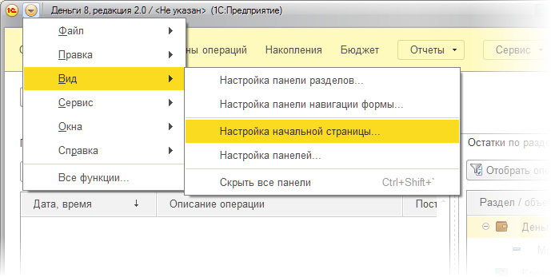
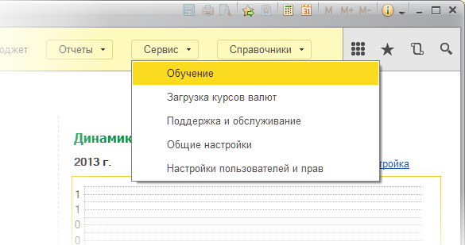

Начальная страница
Работа с программой всегда начинается с начальной страницы, на которой пользователь получает представление о текущем состоянии своих финансов и планов. На начальной странице можно расположить следующие индикаторы:
- Финансовое состояние - информирует об остатках денег, долгов и стоимости имущества на текущую дату. Из этого индикатора можно перейти в форму Операции к соответствующему разделу учета.
- Запланированные операции - показывает количество и суммы операций, запланированных на сегодня и ближайшие дни. В настройках можно указать количество отображаемых дней, а щелчек мышью по какому-либо дню откроет форму Календарь.
- Динамика доходов и расходов - позволяет наглядно сопоставить соответствие сумм доходов и расходов. В настройках индикатора можно задать период и вид диаграммы. Щелчек по диаграмме откроет соответствующий отчет.
- Структура расходов - дает представление о распределении сумм по статьям расходов. Изменить период и вид диаграммы можно в настройках индикатора, а щелчек мышью по диаграмме откроет одноименный отчет.
- Состояние финансовых целей - выводит график накоплений и трат в разрезе финансовых целей. В настройках индикатора можно выбрать конкретные финансовые цели и изменить вид диаграммы. Щелчек по диаграмме откроет форму Накопления.
- Исполнение бюджета - выводит итоговую информацию о соответствии фактических поступлений и списаний денег запланированным в бюджете суммам. В настройках индикатора можно выбрать вариант бюджета и вид диаграммы, а щелчек по диаграмме откроет форму Бюджет.
Состав индикаторов и их расположение на рабочем столе можно настроить в меню Вид - Настройка начальной страницы.

Вернуться на начальную страницу можно с помощью кнопки , расположенной в левом верхнем углу любой другой страницы программы.
В меню Сервис - Обучение есть несколько коротких уроков по основным возможностям программы.

Дополнительная информация: Операции, Календарь, Накопления, Бюджет